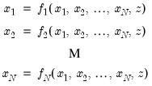
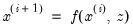
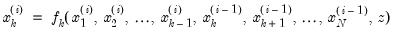
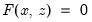
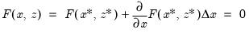
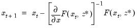
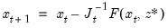
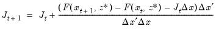

|
|
|








 are the endogenous variables and
are the endogenous variables and  are the exogenous variables.
are the exogenous variables. is the set of equations,
is the set of equations,  is the vector of endogenous variables and
is the vector of endogenous variables and  is the vector of exogenous variables.
is the vector of exogenous variables. :
: between periods are smaller than a specified tolerance.
between periods are smaller than a specified tolerance. at each iteration, Broyden's method also updates the existing Jacobian approximation, , at each iteration based on the difference between the observed change in the residuals of the equation system and the change in the residuals predicted by a linear approximation to the equation system based on the current Jacobian approximation.
at each iteration, Broyden's method also updates the existing Jacobian approximation, , at each iteration based on the difference between the observed change in the residuals of the equation system and the change in the residuals predicted by a linear approximation to the equation system based on the current Jacobian approximation. between periods become smaller than a specified tolerance. In some cases the method may stall before reaching a solution, in which case a fresh set of derivatives of the equation system is taken at the current values of
between periods become smaller than a specified tolerance. In some cases the method may stall before reaching a solution, in which case a fresh set of derivatives of the equation system is taken at the current values of  , and the updating is continued using these derivatives as the new Jacobian approximation.
, and the updating is continued using these derivatives as the new Jacobian approximation.